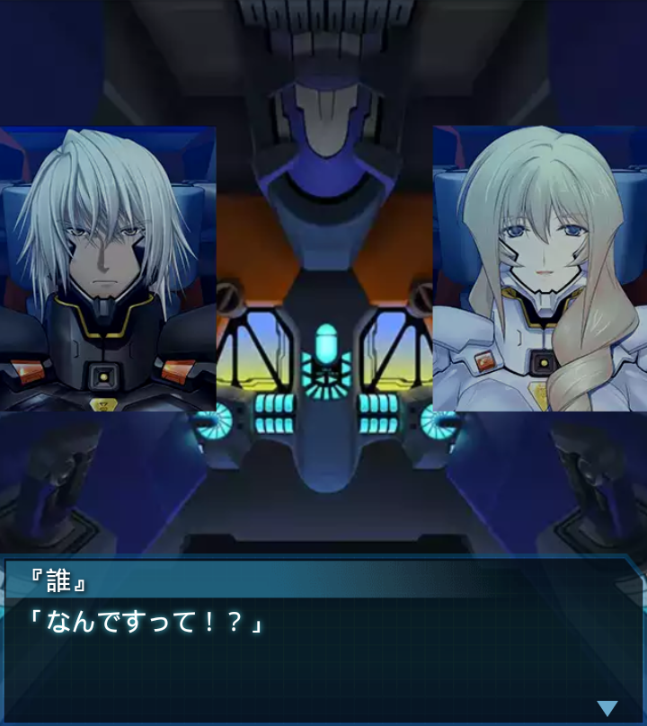

『誰』
「ＢＥＴＡ反応無し。状況終了。終わったか…」
ジークリンデ
「『誰』大尉、ひとつお訊ねしてもよろしいですか？」
『誰』
「ファーレンホルスト中尉、何でしょう？」
ジークリンデ
「貴官は香月司令の直属として独自の任務を受け動いている筈ですが、
これからどうするのですか？」
ジークリンデ
「答えられる範囲で構いません。ですが今やアフリカ大陸は最前線。
貴隊だけでは動けないでしょう」
『誰』
「我々はアフリカの現状を把握し、南極司令本部に報告します。次の
行動はその結果次第です」
アイヒベルガー
「確かに今や人類は、広域情報の統制ひとつ満足に行えない状態だ。
必要な手順だな」
アイヒベルガー
「ではその報告に追加するがいい」
アイヒベルガー
「大陸中央部、コンゴ共和国の密林地帯にフェイズ４ハイヴが
存在している」

『誰』
「なんですって！？」ジークリンデ
「ですが、そのハイヴは不完全で、本来の規模を維持できては
いません」
『誰』
「豪州のエアーハイヴと同様の状況だと思われます。詳細な情報交換が
必要ですね」
ジークリンデ
「豪州にもハイヴが…。現在、欧州連合軍・アフリカ連合軍はこれを
制圧する予定でいますが…」
ジークリンデ
「そのような情報や、南極司令本部の協力が得られれば、作戦の
成功率は大幅に上がります」
『誰』
「わかりました。今の話を香月司令に伝え、判断を
仰ぎます」
ジークリンデ
「頼みましたよ」アイヒベルガー
「…大隊各機、これより帰還する。では『誰』、また会おう」
『誰』
「――はっ！！」